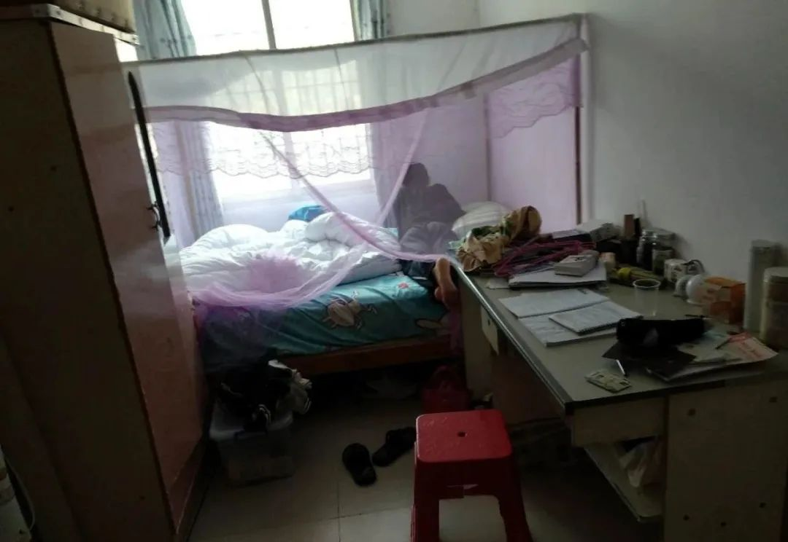

疫情下的深呼吸 | 没有收入，下个月就不知道该怎么生活了
原文链接 备份链接 本文是协作者在“农民工抗疫救援行动”中，针对困境农民工家庭开展的个案访谈之一，旨在快速识别疫情中的脆弱人群及其需求，为疫情防控和救援工作提供参考，我们整理出来与你分享。 疫情下的深呼吸 ——困境农民工家庭个案实录（七） …
本文是协作者在“农民工抗疫救援行动”中，针对困境农民工家庭开展的个案访谈之一，旨在快速识别疫情中的脆弱人群及其需求，为疫情防控和救援工作提供参考，我们整理出来与你分享。
疫情下的深呼吸
——困境农民工家庭个案实录（九）
我们一直在上班
口述者：阿连（化名）/广东籍
打工所在地：珠海
编者注：阿连，女，47岁，小学毕业，是珠海当地的农民，在一家物业公司做清洁工。早年长期受到家暴，因此离婚，独自抚养孩子。后与来自重庆的现任丈夫重新组建家庭。丈夫在一家工厂做普工。疫情期间，阿连和丈夫都坚守在岗位上，他们不是抗疫的逆行勇士，对于这些普通的劳动者来说，对失去工作的担忧，远远大过对工作中感染风险的担忧。
我在一个小区里面做清洁工，有9年时间了。这段时间，我们一直在上班，即使是大年三十。过年的前几天，公司的主管就在工作群里说了关于肺炎疫情的事情，还是要做具体的工作。我们自己也会天天看看手机，也会看朋友、兄弟姐妹群里转发疫情的事情。以前我们每天上班也都要戴口罩，但过年前几天，不仅我们扫地的阿姨要戴口罩，公司还要求保安、办公室里的人都要戴口罩，所以公司这几天也是早晚各发1个口罩给我们，是一次性的，薄薄的口罩。除了工作必须要去上班，我们都不敢到处乱跑，担心遇到有感染的人，还有就是我们的工作，弄厕所的卫生，打扫小区的垃圾，会有小孩子的尿片之类的，什么都要清洁，还是比较担心。
我感觉这次疫情比“非典”还厉害，看到新闻里现在已经死了好多人，我们家里有老有小的，所以还是比较担心的。但感觉公司的领导比我们还要怕，他们每天都要让我们量体温，要求外来人员登记,后来外来人员都不给进小区，比如送外卖和快递的人，物业在业主群里发信息通知业主，要求业主自己到小区门口拿。我家孩子的学校，每天都有老师发信息到家长群，让每个学生要汇报自己是否有离开珠海，身体状况，每天9点多就要把家里的情况发到群里。
这次疫情的影响就是过年都不能走访亲戚，即使我娘家离我们租房的地方也很近，但我还是不去拜年了，都呆在家里面，感觉过年都没有年味。
在公司里也感觉很有压力，疫情期间，公司的领导要求多，我怕自己做不好就丢了工作。因为去年年底时候，我就差点丢了工作。2019年12月底，班长说我近视，做事不太好，合同到期，单位主管不想跟我续签合同。但我做了8、9年，我又没有违反公司的制度，又没做错什么事情，比我年纪大的阿姨，都还继续签合同，所以我说要去劳动局告他们，他们怕我去劳动局，才和我再签合同。因为工作的绩效都是班长说了算，班长写好了，再递交给主管，我一人要做3个人的工作，如果还说不要我，我想我要拿起法律武器保护自己了。
我们平时上班如果被班长发现看手机，或者是哪个地方没弄干净，都会被扣分。如果有人给班长送东西，班长就会看得起一些。之前，我打扫的区域只要有一个烟头，或者接一下电话，就会被拍照发到工作微信群里，现在我被调到另一个小区，目前负责的班长就是只要打电话给我们，或者是发微信，就一定要及时接，不然也会被扣分，我以前有一次没有接到班长电话，没有及时回复就被扣过8分，所以现在我看到工作群的信息，就直接回复“收到”就好了。
对目前的疫情，也没有想过可以获得什么支持，但至少现在我和老公还都有一份稳定的工作，希望全家人健康就可以了。在我心里最牵挂的还是我的孩子，现在大了，不听话，经常跟我顶嘴、闹别扭，我心里很烦，也不知道怎么跟他交流。他现在天天没白天黑夜的玩游戏，跟同学线上互动。

▲ 经常在家玩游戏的小宇，让阿连十分担忧
自从开始上网课，他还天天睡在床上听课，手机边充电边上课，我经常告诉他这样上课不好，一不小心手机爆炸，辐射还那么大，近视也加深了。他就是不听我说，甚至最近作业也做不完，老师也发短信来催交作业。你们谁帮我劝劝他，天天这样，迟早出事，我也没有办法。
对于未来，我的期盼是孩子能考上大学，找到一份工作；我对自己的愿望就是努力工作买满社保，还可以去做清洁卫生或种绿化树的工作，我们村里也有好些50-60岁了的人了还去种绿化树的，我会在这里生活，不会离开的，我生活了几十年，也在这里出生。
社会工作者手记
因为工作需要，阿连一直坚守在岗位上，但从新闻和网络上了解到疫情的严重，加上清洁工作有很大的风险，阿连也很担心。但她更担心的是能否按领导要求做好工作，不要丢了工作。对于像阿连一样的众多基层打工者，无论疫情时期还是正常岁月，能拥有一份稳定的工作，就意味着家里的开支有一个稳定的支撑，日子就可以过得稳当些，即使再辛苦，有风险，他们都能承受。危难面前，他们没有抱怨，没有逃避，他们坚守岗位，但他们并不是逆行的抗疫勇士，他们只是迫于生计需要，同时怀着一颗朴实的心，为社会的正常运行做着自己的贡献，或许这些贡献在有些人眼里微不足道，但是，他们同样值得我们尊敬和关注。
服务建议
当下：
1．给予阿连心理慰藉和情感支持，减缓因为对工作中感染的担心而产生的压力和焦虑。
2．阿连的孩子目前上初中二年级，正处在青春期，有些叛逆，学习不是很好，需要跟进评估孩子的学习和心理状态，邀请其参与线上服务，增强其自信心和学习动力。
长远:
1．提供家庭教育服务，邀请阿连和孩子参与学习亲子沟通方面的知识，日常也可以提供相应的咨询和支持。
2．针对孩子，多一些鼓励，协助其树立积极的价值观，疫情结束后，邀请其参与协作者的公益少年营，及社区自助图书馆、公益夏令营等志愿服务，协助其更好的认知自我，认知家庭，建立良好的朋辈关系。
（更多个案故事与个案报告见微信公众号“协作者云社工”，转载请在公众号后台留言与协作者联系。）


感谢每一位协作者之友。在这个非常时期，即使人与人之间必须要保持距离，总还有生命的希望和力量迸发在我们心间。谢谢有你们！
支持协作者，
你可以加入协作者之友，成为协作者月捐人

查阅往期链接，了解更多协作者抗击疫情信息：
疫情下的深呼吸|新冠肺炎疫情中困境农民工家庭需求分析报告（摘要）
协作者致打工朋友的一封信（二）| 疫情期间，如何面对返城务工

协作者云社工

长按二维码，识别关注协作者云社工
说明：“协作者云社工”微信公众号发布内容，除特别说明外，均为原创，使用文中内容请注明出处及作者，否则将追究相关责任。
原文链接 备份链接 本文是协作者在“农民工抗疫救援行动”中，针对困境农民工家庭开展的个案访谈之一，旨在快速识别疫情中的脆弱人群及其需求，为疫情防控和救援工作提供参考，我们整理出来与你分享。 疫情下的深呼吸 ——困境农民工家庭个案实录（七） …
原文链接 备份链接 本文是协作者在“农民工抗疫救援行动”中，针对困境农民工家庭开展的个案访谈之一，旨在快速识别疫情中的脆弱人群及其需求，为疫情防控和救援工作提供参考，我们整理出来与你分享。 疫情下的深呼吸 ——困境农民工家庭个案实录（五） …
原文链接 备份链接 本文是协作者在“农民工抗疫救援行动”中，针对困境农民工家庭开展的个案访谈之一，旨在快速识别疫情中的脆弱人群及其需求，为疫情防控和救援工作提供参考，我们整理出来与你分享。 疫情下的深呼吸 ——困境农民工家庭个案实录（八） …
原文链接 备份链接 本文是协作者在“农民工抗疫救援行动”中，针对困境农民工家庭开展的个案访谈之一，旨在快速识别疫情中的脆弱人群及其需求，为疫情防控和救援工作提供参考，我们整理出来与你分享。 疫情下的深呼吸 ——困境农民工家庭个案实录（六） …
原文链接 备份链接 这次疫情，让很多年轻人重新思考自己的职场下一步。 可能的裁员，泡汤的年终奖，不太明朗的求职形势和疫情下复工的危险，是每个职场人或多或少要面临的处境。 稳定还是高薪，健康还是金钱，工作的意义感，所处的生命阶段，这些驱使 …